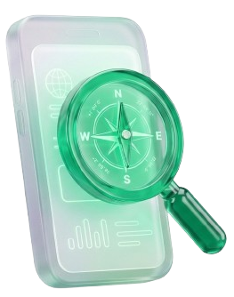
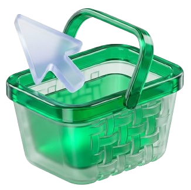
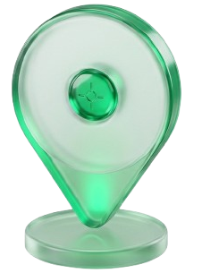
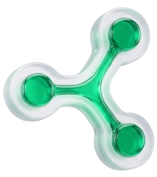

Explore o App
Abra nossa plataforma e veja em tempo real quais padarias, hortifrútis e mercadinhos do seu bairro criaram Caixas Surpresa para o dia de hoje.

Abra nossa plataforma e veja em tempo real quais padarias, hortifrútis e mercadinhos do seu bairro criaram Caixas Surpresa para o dia de hoje.

Selecione a sua categoria favorita e garanta uma seleção repleta de produtos deliciosos e seguros, pagando até 70% menos que o valor original.

Vá até o estabelecimento parceiro no horário indicado na tela, mostre seu comprovante digital no celular e pegue sua caixa direto no balcão.

Espalhe a causa! Mostre sua caixa nas redes sociais para incentivar mais pessoas a economizarem, ajudarem o comércio local e salvarem o planeta.
Um ecossistema inteligente onde o desperdício zero é garantido automaticamente.

É a oportunidade ideal para descobrir novos produtos e ao mesmo tempo apoiar os negócios da sua comunidade. Você economiza de verdade na compra de alimentos com rigoroso controle de qualidade, enquanto adota um estilo de vida sustentável e prático.
Se uma Caixa Surpresa não for vendida por consumidores até o horário limite, nosso algoritmo entra em ação de forma 100% automática. A ReNutri mapeia a geolocalização e direciona esses alimentos para as cozinhas comunitárias e projetos sociais mais próximos, garantindo que nenhuma comida boa seja desperdiçada e que quem mais precisa seja acolhido.